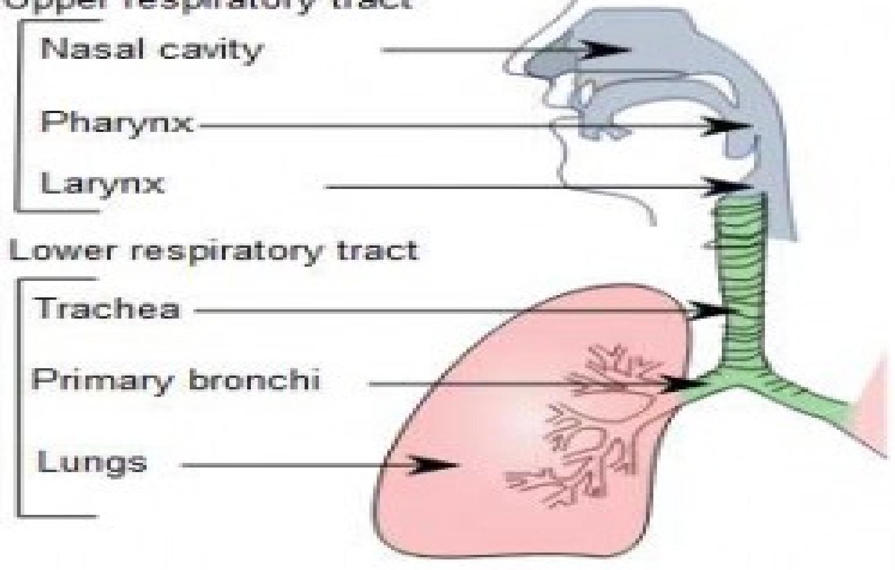

Overview of Pulmonary Conditions & The Nursing Process
Module Outcomes
By the end of the module the learner should:
- Manage patients with restrictive respiratory disorders using the nursing process.
- Manage patients with obstructive respiratory disorders using the nursing process.
Introduction to the Respiratory System
The cells of the human body require a constant stream of oxygen to stay alive. The respiratory system provides oxygen to the body's cells while removing carbon dioxide, a waste product that can be lethal if allowed to accumulate.
There are 3 major parts of the respiratory system: the airway, the lungs, and the muscles of respiration. The airway, which includes the nose, mouth, pharynx, larynx, trachea, bronchi, and bronchioles, carries air between the lungs and the body's exterior.
The lungs act as the functional units of the respiratory system by passing oxygen into the body and carbon dioxide out of the body. Finally, the muscles of respiration, including the diaphragm and intercostal muscles, work together to act as a pump, pushing air into and out of the lungs during breathing.
Pneumonia
Pneumonia is an inflammation of the lung parenchyma caused by various microorganisms, including bacteria, mycobacteria, fungi, and viruses. Pneumonias are classified as community acquired pneumonia (CAP), hospital-acquired (nosocomial) pneumonia (HAP), pneumonia in the immunocompromised host, and aspiration pneumonia.
Those at risk for pneumonia often have chronic underlying disorders, severe acute illness, a suppressed immune system from disease or medications, immobility, and other factors that interfere with normal lung protective mechanisms. The elderly are also at high risk.
Pathophysiology
An inflammatory reaction can occur in the alveoli, producing an exudate that interferes with the diffusion of oxygen and carbon dioxide; bronchospasm may also occur if the patient has reactive airway disease.
- Bronchopneumonia, the most common form, is distributed in a patchy fashion extending from the bronchi to surrounding lung parenchyma.
- Lobar pneumonia is the term used if a substantial part of one or more lobes is involved.
Pneumonias are caused by a variety of microbial agents in the various settings. Common organisms include Pseudomonas aeruginosa and Klebsiella species; Staphylococcus aureus; Haemophilus influenzae; Staphylococcus pneumoniae; and enteric Gram-negative bacilli, fungi, and viruses (most common in children).
Clinical Manifestations
Clinical features vary depending on the causative organism and the patient's disease.
- Sudden chills and rapidly rising fever (38.5°C to 40.5°C [101°F to 105°F]).
- Pleuritic chest pain aggravated by respiration and coughing.
- Severely ill patient has marked tachypnea (25 to 45 breaths/min) and dyspnea; orthopnea when not propped up.
- Pulse rapid and bounding; may increase 10 beats/min per degree of temperature elevation (Celsius).
- A relative bradycardia for the amount of fever suggests viral infection, mycoplasma infection, or infection with a Legionella organism.
- Other signs: upper respiratory tract infection, headache, low-grade fever, pleuritic pain, myalgia, rash, and pharyngitis; after a few days, mucoid or mucopurulent sputum is expectorated.
- Sputum purulent, rusty, blood-tinged, viscous, or green depending on etiologic agent.
- Appetite is poor, and the patient is diaphoretic and tires easily.
Diagnostic Methods
- Primarily history, physical examination
- Chest x-rays, blood and sputum cultures, Gram stain
Medical Management
- Antibiotics are prescribed on the basis of Gram stain results and antibiotic guidelines.
- Supportive treatment includes hydration, antipyretics, antitussive medications, antihistamines, or nasal decongestants.
- Bed rest is recommended until infection shows signs of clearing.
- Oxygen therapy is given for hypoxemia.
- Respiratory support includes high inspiratory oxygen concentrations, endotracheal intubation, and mechanical ventilation.
- Treatment of atelectasis, pleural effusion, shock, respiratory failure, or superinfection is instituted, if needed.
- For groups at high risk for CAP, pneumococcal vaccination is advised.
Nursing Process
Possible Nursing Diagnoses
- Ineffective airway clearance related to copious tracheobronchial secretions
- Activity intolerance related to impaired respiratory function
- Risk for deficient fluid volume related to fever and a rapid respiratory rate
- Imbalanced nutrition: less than body requirements
- Deficient knowledge about treatment regimen and preventive health measures
Nursing Interventions
1. Improving Airway Patency
- Encourage hydration: fluid intake (2 to 3 L/day) to loosen secretions.
- Provide humidified air using high-humidity face mask.
- Encourage patient to cough effectively, and provide correct positioning, chest physiotherapy, and incentive spirometry.
- Provide nasotracheal suctioning if necessary.
- Provide appropriate method of oxygen therapy.
- Monitor effectiveness of oxygen therapy.
2. Promoting Rest and Conserving Energy
- Encourage the debilitated patient to rest and avoid overexertion and possible exacerbation of symptoms.
- Patient should assume a comfortable position to promote rest and breathing (eg, semi-Fowler's position).
- Instruct outpatients not to overexert themselves and to engage in only moderate activity during the initial phases of treatment.
3. Promoting Fluid Intake and Maintaining Nutrition
- Encourage fluids (2 L /day minimum with electrolytes and calories).
- Administer IV fluids and nutrients, if necessary.
4. Promoting Patients' Knowledge
- Instruct on cause of pneumonia, management of symptoms, signs and symptoms that should be reported to the physician or nurse, and the need for follow-up.
- Explain treatments in simple manner and using appropriate language.
- Repeat instructions and explanations as needed.
Monitoring and Preventing Potential Complications
- Shock
- Respiratory failure
- Atelectasis
- Pleural effusion
Pneumothorax and Hemothorax
Pneumothorax occurs when the parietal or visceral pleura is breached and the pleural space is exposed to positive atmospheric pressure. Normally the pressure in the pleural space is negative or subatmospheric; this negative pressure is required to maintain lung inflation.
When either pleura is breached, air enters the pleural space, and the lung or a portion of it collapses. Hemothorax is the collection of blood in the chest cavity because of torn intercostal vessels or laceration of the lungs injured through trauma. Often both blood and air are found in the chest cavity (hemopneumothorax).
Types of Pneumothorax
Simple Pneumothorax
A simple, or spontaneous, pneumothorax occurs when air enters the pleural space through a breach of either the parietal or visceral pleura. Most commonly this occurs as air enters the pleural space through the rupture of a bleb or a bronchopleural fistula. A spontaneous pneumothorax may occur in an apparently healthy person in the absence of trauma due to rupture of an air-filled bleb, or blister, on the surface of the lung, allowing air from the airways to enter the pleural cavity. It may be associated with diffuse interstitial lung disease and severe emphysema.
Traumatic Pneumothorax
A traumatic pneumothorax occurs when air escapes from a laceration in the lung itself and enters the pleural space or from a wound in the chest wall. It may result from blunt trauma (eg, rib fractures), penetrating chest or abdominal trauma (eg, stab wounds or gunshot wounds), or diaphragmatic tears. It may also occur during invasive thoracic procedures. Open pneumothorax is one form of traumatic pneumothorax. It occurs when a wound in the chest wall is large enough to allow air to pass freely in and out of the thoracic cavity with each attempted respiration.
Tension Pneumothorax
A tension pneumothorax occurs when air is drawn into the pleural space and is trapped with each breath. Tension builds up in the pleural space, causing lung collapse. Mediastinal shift (shift of the heart and great vessels and trachea toward the unaffected side of the chest) is a life-threatening medical emergency. Both respiratory and circulatory functions are compromised.
Clinical Manifestations
- Pleuritic pain of sudden onset.
- Minimal respiratory distress with small pneumothorax; acute respiratory distress if large.
- Anxiety, dyspnea, air hunger, use of accessory muscles, and central cyanosis (with severe hypoxemia).
- In a simple pneumothorax, the trachea is midline, expansion of the chest is decreased, breath sounds may be diminished.
- In a tension pneumothorax, the trachea is shifted away from the affected side, breath sounds are diminished or absent, and percussion to the affected side is hyperresonant. The clinical picture is one of air hunger, agitation, increasing hypoxemia, central cyanosis, hypotension, tachycardia, and profuse diaphoresis.
Medical Management
- The goal is evacuation of air or blood from the pleural space.
- A small chest tube is inserted near the second intercostal space for a pneumothorax.
- A large-diameter chest tube is inserted, usually in the fourth or fifth intercostal space, for hemothorax.
- Traumatic open pneumothorax is plugged (petroleum gauze).
- Antibiotics are usually prescribed to combat infection from contamination.
- Thoracotomy may be performed if bleeding is excessive.
- For tension pneumothorax, a large-bore needle is inserted at the second intercostal space, midclavicular line on the affected side as an emergency measure, followed by chest tube insertion.
Nursing Management
- Promote early detection through assessment and identification of high-risk population; report symptoms.
- Assist in chest tube insertion; maintain chest drainage or water-seal.
- Monitor respiratory status and re-expansion of lung, with interventions (pulmonary support) performed in collaboration with other health care professionals.
- Provide information and emotional support to patient and family.
Chest Injury
A chest injury, also known as chest trauma, is any form of physical injury to the chest including the ribs, heart and lungs. Chest injuries account for 25% of all deaths from traumatic injury. Typically chest injuries are caused by blunt mechanisms such as motor vehicle collisions or penetrating mechanisms such as stabbings.
Chest injuries can be classified as blunt or penetrating. Blunt and penetrating injuries have different pathophysiologies and clinical courses.
Types of Chest Injuries
-
Injuries to the chest wall
- Chest wall contusions or hematomas.
- Rib fractures
- Flail chest
- Sternal fractures
- Fractures of the shoulder girdle
-
Pulmonary injury and injuries involving the pleural space
- Pulmonary contusion
- Pulmonary laceration
- Pneumothorax
- Hemothorax
- Hemopneumothorax
-
Injury to the airways
- Tracheobronchial tear
-
Cardiac injury
- Pericardial tamponade
- Myocardial contusion
- Traumatic arrest
- Hemopericardium
-
Blood vessel injuries
- Traumatic aortic rupture
- Thoracic aorta injury
- Aortic dissection
-
Injuries to other structures within the torso
- Esophageal injury (Boerhaave syndrome)
- Diaphragm injury
Clinical Manifestations
The injured area is usually tender or painful. Pain is worse when people inhale. The chest may be bruised. Sometimes people are short of breath. If the injury is severe, they may feel very short of breath, drowsy, or confused, and the skin may be cold, sweaty, or blue. Such symptoms may develop when the lungs malfunction severely (respiratory failure) or people are in shock.
Other symptoms depend on the specific chest injury. For example, sometimes air accumulates under the skin in people with pneumothorax. Affected skin feels crackly and makes a crackling sound when touched. The veins in the neck are sometimes enlarged if cardiac tamponade or tension pneumothorax develops.
Diagnosis and Treatment
Most blunt injuries are managed with relatively simple interventions like tracheal intubation and mechanical ventilation and chest tube insertion. Diagnosis of blunt injuries may be more difficult and require additional investigations such as CT scanning. Penetrating injuries often require surgery.
The treatment goal is to support breathing and circulation and treat the specific injury. People may be given oxygen, intravenous fluids, or blood transfusions. For some injuries, a chest tube must be inserted to drain blood (hemothorax) or air (pneumothorax).